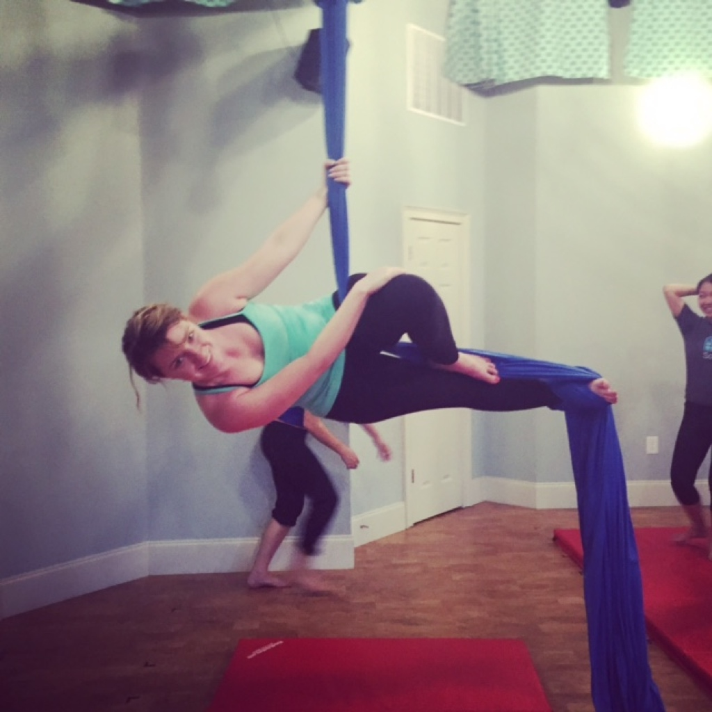

About Me

Born and raised in Asheville, North Carolina. I am a coffee addict as well as a foodie! Hence, the reason Not Just Coffee has memorized my order. My favorite drink is from the Roaring Twenties and is called 'The Aviation'.
Traveling is my passion. I've been to Europe multiple times. I even attended a language school in Freiburg, Germany. My dream destination is Iceland. People say if you do what you love, you'll never work a day in your life. That's why I'm here. I thoroughly enjoy coding and this class will give me the education to travel and work remotely at the same time.